Welcome to the NotificationCat User Manual
Encountering multi-graphics card errors with the dashboard program? Click here to view the solution!
Thank you for purchasing this software from Itch.io or the Steam store 🤗
Version update: Preliminary improvement of PC v1.2/Android v2/UWP v1.1.0.0
- Add real-time connection status for PC/Android
- The help manual will now switch to the corresponding website based on the program language
- All text in the Android program is fully localized, and non native warnings have been removed
- Redesign of PC UI layout
- Android fixed an error where messages sometimes prompt twice in VR
- Redesign of UWP program layout
Version Updates: First-day updates PC v1.1 / Android v1 / UWP v1.0.0.0
- Added QR code linking functionality and instructions
- Added online customer support feature to the usage instructions website
- Added errors related to QR code linking functionality and UWP auxiliary program full-screen disturbance prompts on the usage instructions website
- Added Github feedback channel to the usage instructions website
- Android program system requirements have been lowered from Android 10 to Android 8
- UWP auxiliary program fixed temporary disabling of the title function due to title confusion (to be restored in the next version)
Overview
What is NotificationCat 🤔
NotificationCat VR (Notification Cat VR) is a message notification forwarding tool based on the open-source project OpenVRNotificationPipe by BOLL7708.
This tool allows you to forward notification messages from your Android® or iOS® devices to your VR while you're playing. This lets you get specific information from notification messages, such as notification titles and content, without needing to take off your VR headset.
What can paid software bring me 💴
Support for both Android® and iOS® devices 📱: You might have used other similar VR notification forwarding software, but we are the most comprehensive one for supporting iOS!
Long-term updates and developer support 👍: NotificationCat VR, as a paid application, has a long-term update plan and comprehensive developer support. We not only add new features during the software's lifecycle but also respond to user feedback, including adopting new feature suggestions and fixing bugs!
Super-fast ticket support 📧: Facing issues while using the software? The software provides various ways to contact the author for help!
Software System Requirements 💻
PC Operating System: Windows 10 Version 1809 Fall Update or later
If your operating system is below Windows 10 Version 1809 Fall Update, Toast Mode is not available. You won't be able to forward notifications from your iOS® device to VR!
Android Operating System: Android 10 or later
If your Android® operating system version is below Android 8, the Android® program of NotificationCat VR won't run.
For Huawei HarmonyOS Users
HarmonyOS has not been tested by developers. If your HarmonyOS meets Android 10 API or higher, theoretically, you can use the Android® program of NotificationCat VR. However, unexpected errors may occur, and HarmonyOS is not within the scope of ticket support.
iOS Operating System: iPhone with iOS 14.0 or higher
Software Installation 💿
Windows 🖥️
- Download and install the software from your software purchase location.
- Run the software (Having issues here? Refer to the Error Manual page for solutions.)
Consider enabling startup with SteamVR
This option allows the program to start automatically with SteamVR, avoiding the need to manually open the software every time you play VR.
Android 📱
- Download the Android® program of NotificationCat VR from a trusted app market like ApkPure or this website.
- Install the APK application.
Why can't I get the app from Google Play? How can I verify the app's safety?
Google Play charges a registration fee for every developer account that publishes apps on its store. We are temporarily unable to pay this fee, but adding the app to the Google Play store is part of our update plan. Additionally, the app is manually reviewed by a trusted app market like ApkPure, ensuring that it doesn't contain any malicious code.
iPhone 🍎
- Download the Phone Link app from the Apple Store.
- Refer to Toast Mode.
Quick Start 🏎️
After starting SteamVR, when you open the software, your status should show as online in both places (Having issues here? Refer to the Error Manual page for solutions.) 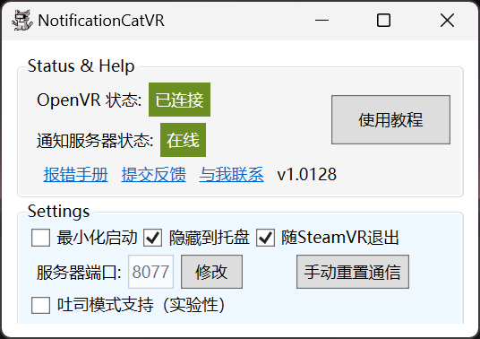
- Using an Android® Device
Open the Android® program of NotificationCat VR, and it will prompt you to grant notification access. 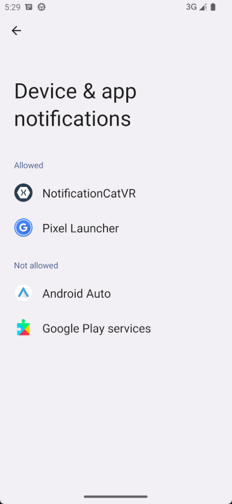
Click on NotificationCat VR to enter the app details page for notification access.
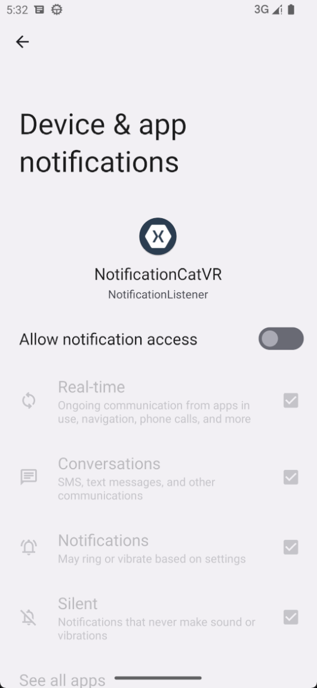
Allow the app to access all notifications.
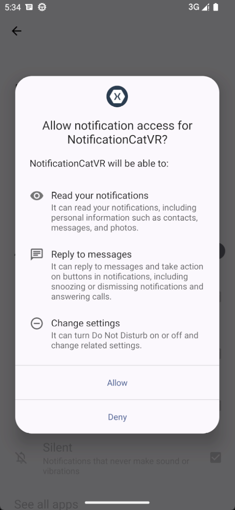
Go back to the app, enter your computer's IP address, and click "Connect" or scan the QR code directly. Your computer will display a prompt when the connection is successful.
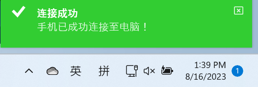 (Having issues here? Refer to the Error Manual page for solutions.)
Note for Domestic Android OS
You must re-enable the permission to "get notifications from all apps" every time you start the app, or else you might not receive notifications or encounter unexpected errors. This doesn't apply to native OS like Google Pixel!
- Using an iOS® Device
Connect your iPhone to the Microsoft app "Phone Link" and ensure that it can receive iPhone notifications. 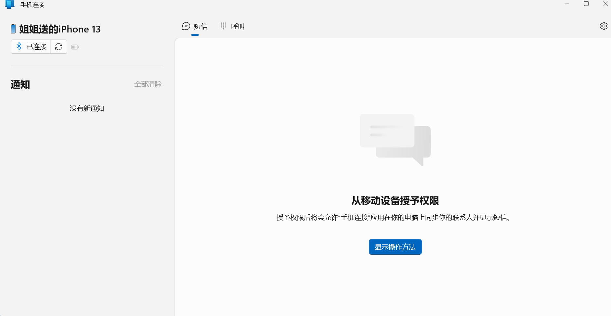
Check the "Toast Mode Support (Experimental)" option on the NotificationVR app.
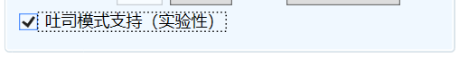
Allow notification access in the popped-up Toast Mode assistant app.
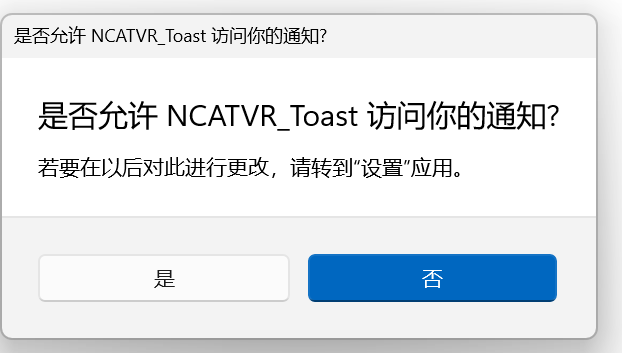
About Toast Mode
Toast Mode requires specific configurations to work. If you get a "No app can open this link" prompt after enabling Toast Mode, refer to the Toast Mode section.
Toast Mode 🍞
Toast Mode is one of the distinctive features of this software.
Due to Apple's developer policies and the need to safeguard the security of iOS devices, Apple does not allow general developers/software companies to use the permission "access all system notifications on iPhone."
However, the Windows app "Phone Link" developed by Microsoft allows users to connect their iPhones to Windows and receive Toast notifications. But non-Windows Mixed Reality users (using devices like VIVE, Oculus, etc.) cannot forward Windows Toast notifications to VR.
To forward Toast notifications from Windows to SteamVR for users with devices like VIVE, Oculus, and Index, NotificationCat VR has developed a UWP auxiliary program for forwarding. This UWP program needs to be installed manually.
Installation Guide 🚩
- Enable Windows Developer Mode
You must enable Windows Developer Mode to install UWP apps not authorized by the Microsoft Store. Search for "developer" in Settings to navigate to the Developer Mode page.
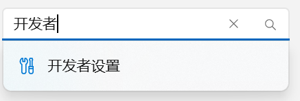
Open Developer Mode.
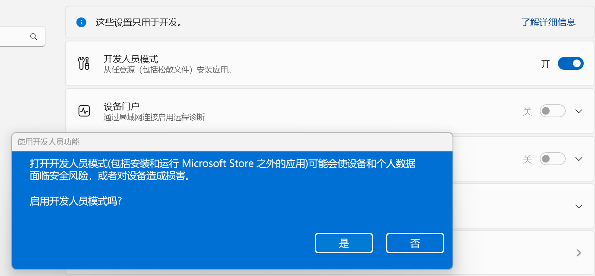
- Download and Install the UWP Auxiliary
Program
Download the UWP auxiliary program from this location.
Right-click the .cer certificate file, select "Install," choose "Place all certificates in the following store," and select "Trusted Root Certification Authorities."
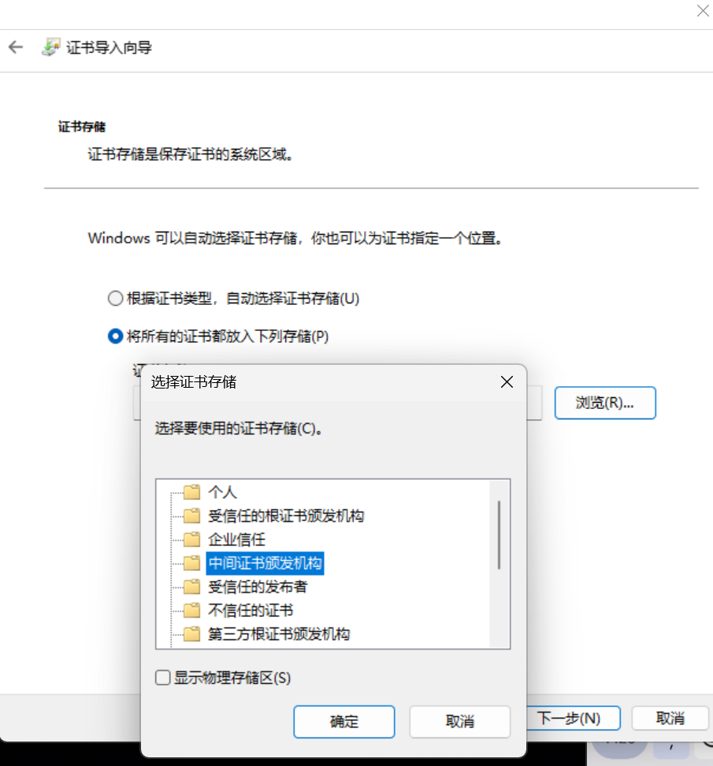
Double-click the .msibundle file and click "Install" on the installation interface.
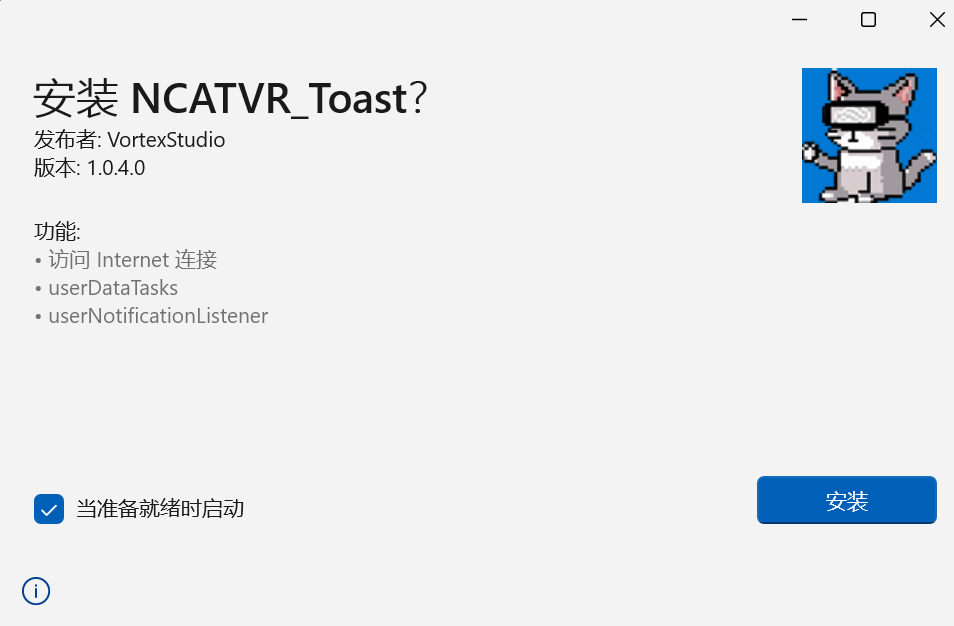
(Having issues here? Refer to the Error Manual page for solutions.)
- Disable Automatic Do Not Disturb in Full-Screen Mode on Windows In Settings > System > Notifications, turn off all automatic "Do Not Disturb" options.
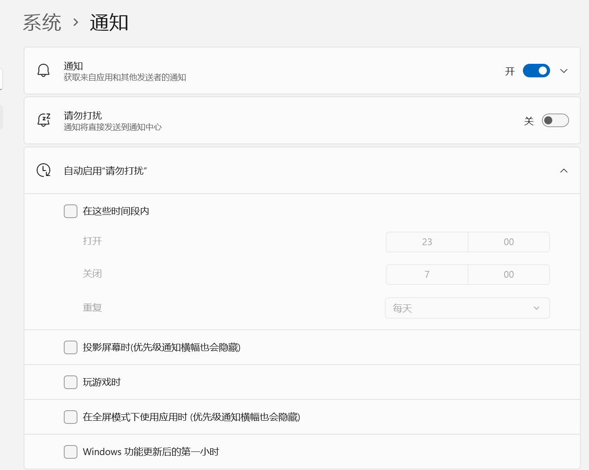
- Toast Mode Precautions
- When using Toast Mode, Windows must not be set to "Night Mode," "Do Not Disturb," or any mode or scenario settings that affect notification display.
- You cannot close the Phone Link app when using Toast Mode.
- You cannot close the UWP auxiliary program when using Toast Mode.
Handling Errors with the 'Phone Link' App
"Phone Link" is an app developed by Microsoft. For any issues related to Phone Link, seek help from Microsoft!
User Support 🙌
Due to the limitations of static documentation, the software allows users to submit tickets to the developer for help.
Through the Developer's Blog Through QQ Through Email Through Github issues
Whether through tickets or instant messaging software, you must provide the following information:
- Your name
- Purchase credentials from Itch.io or the Steam store (ID number or screenshot)
- Device details (Windows OS version, Android version, or iOS version)
- Detailed description of the issue
- What steps you tried to resolve the issue but failed
Read the Troubleshooting Manual carefully before submitting a ticket
The developer's energy for handling tickets is limited, so please avoid submitting questions already covered in the "Error Manual" to the tickets.